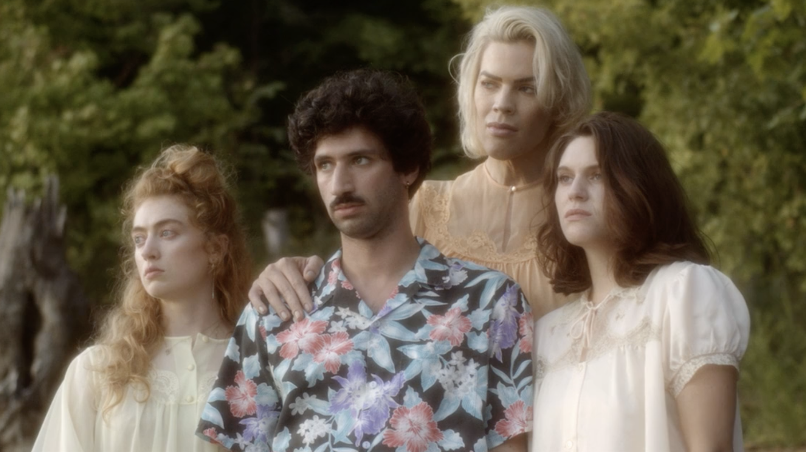

i am zach weintraub, an adult human, born in 1987.
i like movies and have made and acted in many of them myself.
i am available for commsioned work by those with impeccable taste.
i am also available to act in your movie.
if you are interested in any of the work listed here, please contact me.
i am happy to share :)
马克来了 (WELCOME, MARK), 2019, 25 min.
SLACKJAW, 2015, 75 min.
YOU MAKE ME FEEL SO YOUNG, 2012, 80 min.
THE INTERNATIONAL SIGN FOR CHOKING, 2011, 80 min.
BUMMER SUMMER, 2010, 80 min.

A DIM VALLEY, 2020, dir. Brandon Colvin -> info
A MORNING LIGHT, 2015, dir. Ian Clark -> info
SPEED OF SOUND, 2013, dir. Brian Perkins
THE MEN OF DODGE CITY, 2011, dir. Nandan Rao
hit me up.
zachweintraub@gmail.com
+1.360.480.1382